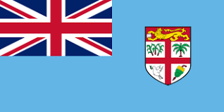

.jpg)
The culture of Indo-Fijians comes from the traditions brought by Indian workers who moved to Fiji many years ago. Their culture includes Indian languages, music, food, religion, and festivals. Many Indo-Fijians celebrate festivals like Diwali and Holi with family, lights, and colorful powders. Traditional foods such as roti, curry, and samosa are also an important part of their culture. Today, Indo-Fijian culture is a mix of Indian traditions and life in Fiji, creating a unique and vibrant community.
About Fiji
Fiji is a South Pacific nation made up of more than 300 islands, known for its warm tropical climate, vibrant mix of iTaukei and Indo‑Fijian cultures, and a landscape of coral reefs, volcanic mountains, and lush forests. Its economy relies heavily on tourism, sugar production, and remittances, while its government plays an influential role in Pacific regional politics and climate advocacy. Fiji is also recognized for its strong peacekeeping contributions and its leadership among island nations facing rising sea levels and environmental pressures. If you want the paragraph to focus more on travel, culture, or politics, I can shape it that way.
Some Facts About Fiji
Fiji is an archipelago of over 300 islands, with around 110 inhabited.
The official languages are English, Fijian, and Hindi.
Fiji has a population of approximately 900,000 people.
The capital city is Suva, located on the island of Viti Levu.
Fiji's economy is largely based on tourism, sugar production, and remittances from abroad.
Fiji is known for its vibrant culture, which includes traditional music, dance, and festivals like Diwali and Holi celebrated by the Indo-Fijian community.